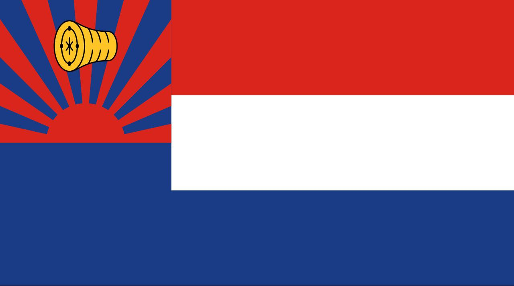
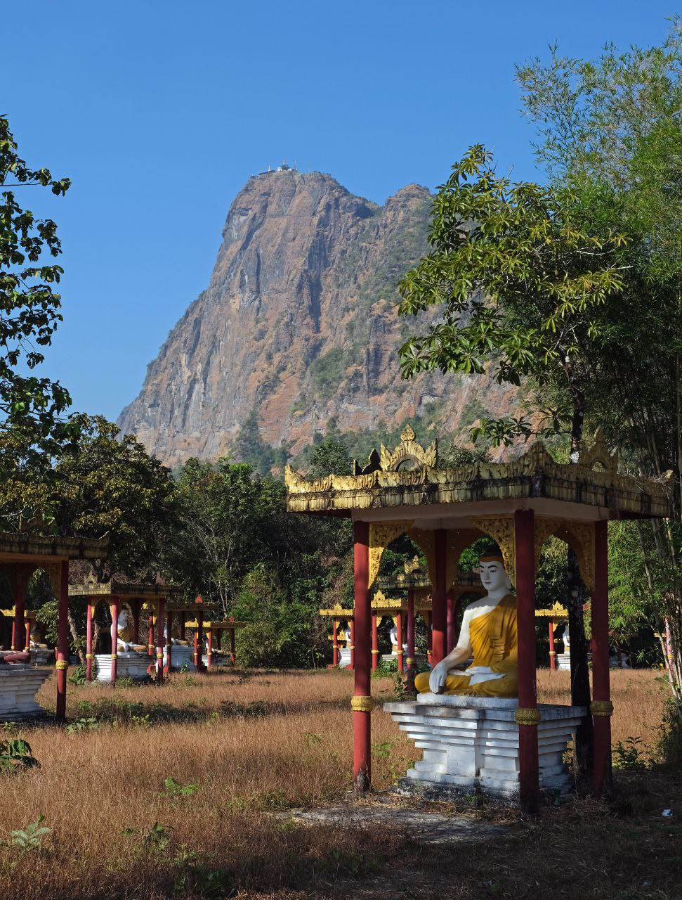
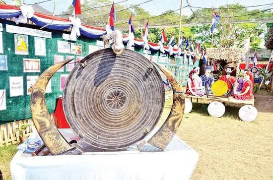
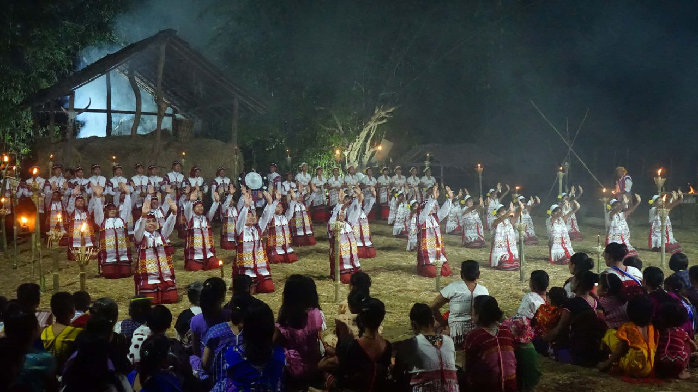

Profile
The Karen, known in Myanmar as Kayin, are a diverse cluster of related peoples, with major branches including the Sgaw Karen and Pwo Karen. Subgroups include Sgaw, Pwo (historically referred to as “White Karen”), and various upland groups sometimes labeled “Red Karen” in older sources. The Kayan are usually classified with the Kayah or Karenni today, so they should not be conflated with Kayin. The Karen population is often estimated to make up around 10% of Myanmar’s total population. Their languages mainly include Sgaw Karen and Pwo Karen, both belonging to the Sino-Tibetan family, along with numerous related Karenic varieties.
Location
Karen peoples have long inhabited southeastern Myanmar, including the Salween basin, Pegu Yoma foothills, and Irrawaddy delta, as well as adjacent areas of Thailand. The largest concentrations are in Kayin (Karen) State, with significant communities also in Bago Region, the Ayeyarwady delta, Tanintharyi, and parts of Mon, Kayah, and southern Shan. Many Karen people also live across the border in Thailand.

Attraction
Notable attractions in the Hpa-An area include Mount Zwegabin, Saddan (Saddar) Cave, Kawgun Cave with its ancient Buddhist reliefs, Kyauk Kalap Pagoda, Bayin Nyi Cave and hot springs, as well as the scenic karst landscapes surrounding the region.

Culture and Traditions
Cultural highlights include the signature Don dance, a community line dance led by the “Don Koh,” and the bamboo (sae klee) dance performed at festivals. Talabaw or Talapaw, a bamboo-shoot soup often prepared with fish and herbs, is a hallmark dish, alongside a variety of soups and curries made with vegetables, bamboo shoots, and forest greens. The Karen are also renowned for their weaving using back-strap looms in red, white, and indigo palettes with geometric motifs, as well as bamboo and wood basketry and other local handicrafts tied to village life, which vary by area.

Traditional Dress
Sgaw Karen girls and women are widely known for wearing a white, hand-woven tunic when unmarried, while married women and men wear brightly patterned back-strap-loom textiles, with designs varying by subgroup.

Festival
Important Karen celebrations include the Karen New Year, observed according to the lunar calendar usually in December or January; the Karen Wrist-Tying Festival in August; Karen National Day on 11 February; and the memorial Karen Martyrs’ Day on 12 August.